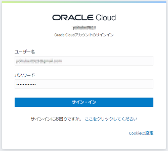
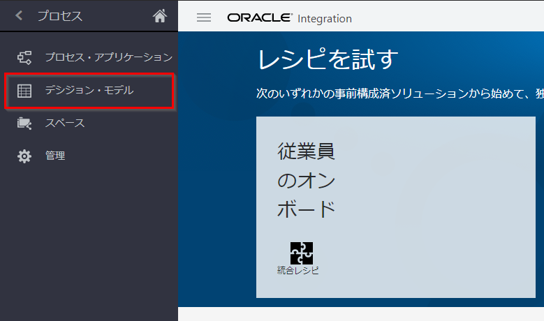
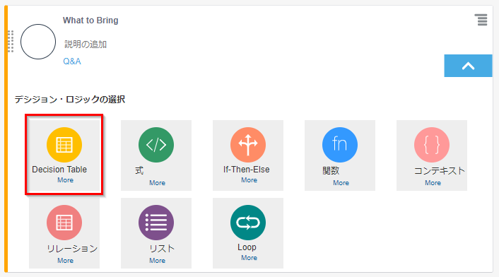
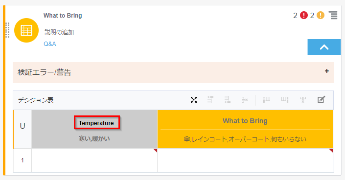
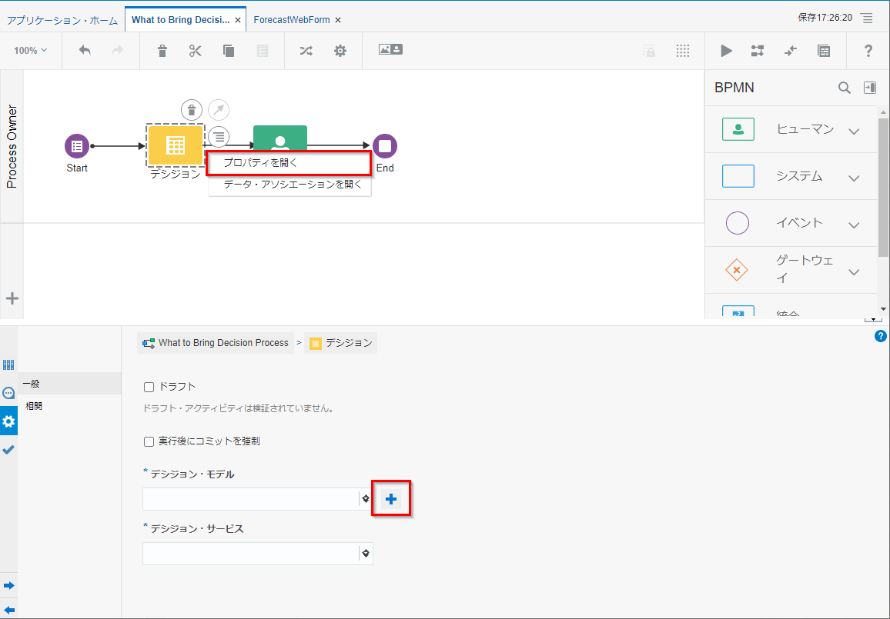

Oracle Integration(OIC) のプロセス自動化 (Process Automation) 機能を利用して、簡単なデシジョン・モデル(Decision Model)の作成方法をステップ・バイ・ステップで紹介するチュートリアルです。
ここでは、気温と降水確率を入力パラメータとして、外出時の持ち物を判断するデシジョンモデル(What to Bring)を作成します。
前提条件
-
Oracle Integration Cloud インスタンスの作成
Oracle Integration(OIC) を使い始めるための準備作業として、OIC インスタンスの作成が必要になります。この文書は OIC インスタンスの作成方法を ステップ・バイ・ステップで紹介するチュートリアルです。 -
OIC インスタンス作成時のエディションが ENTERPRISE であること
-
OIC インスタンスの ServiceAdministrator ロールが付与されたユーザーが準備されていること
(参考) Oracle Integration Roles and Privileges
https://docs.oracle.com/en/cloud/paas/integration-cloud/integration-cloud-auton/oracle-integration-cloud-roles-and-privileges.html#GUID-44661068-C31A-4AB5-BC24-B4B90F951A34
Process Automation で簡単なデシジョン・モデルを作成する
説明
デシジョン・モデルとは、プロセスの中で利用するデシジョン（判断）を自動化する仕組み・ルールです。例えば、以下のようなものが考えられます。
- 購買稟議申請の合計金額が100万円未満の場合は部門長承認が必要、100万円を超える場合は部門長および担当役員の承認が必要
- 従業員の年次有給休暇の付与日数を、従業員の役職、勤務地、勤続年数から自動計算する
このチュートリアルでは、気温と降水確率から外出時の持ち物をデシジョン（判断）するデシジョン・モデルを作成します。
今回作成するデシジョンロジックは以下の通りです。
| 条件 | アクション |
|---|---|
| 暖かい、かつ、雨が降る | 傘 |
| 暖かい、かつ、雨が降らない | 何もいらない |
| 寒い、かつ、雨が降る | レインコート |
| 寒い、かつ、雨が降らない | オーバーコート |
- 暖かい、寒いの判断は以下の通りとします。
| 条件 | アクション |
|---|---|
| 気温が18℃を超える | 暖かい |
| 気温が18℃以下 | 寒い |
- 雨が降る、降らないの判断は以下の通りとします。
| 条件 | アクション |
|---|---|
| 降水確率が80%を超える | 雨が降る |
| 降水確率が80%以下 | 雨が降らない |
OIC インスタンスにアクセスする
Web ブラウザを開き、提供された OIC インスタンスのURLを入力します。もしくはOCIのコンソールから「開発者サービス」－「アプケーション統合」から作成済みのOICインスタンスを選択し、「サービス・コンソール」からOICコンソールを開きます。

TIPS
OCIにログインしていない場合はユーザー名とパスワードを入力し、サイン・インをクリックします。

OIC のホーム画面が開きます。

デシジョン・モデルの作成
左ナビゲーションメニューのプロセス→デシジョン・モデルをクリックします。

「作成」をクリックします。

続けて、デシジョンモデルを作成しますの「作成」をクリックします。

名前、スペース、説明を入力し、「作成」をクリックします。
ここでは以下を入力します。
| 入力項目 | 入力する値 |
|---|---|
| 名前 | What to Bring Decision Model |
| スペース | Tutorial |
| 説明 | 外出時の持ち物を判断するデシジョン・モデル |
| すぐに開始 | チェックを入れる |

デシジョン・モデルの編集画面が開きます。
今回はリスト・モードでデシジョン・モデルを作成するので、画面右上のメニューからリスト・モードへ切り替えます。
TIPS
OIC Processでは、グラフまたはリスト・モードのいずれかを使用してデシジョン・モデルを作成することができます。グラフ・モードでは、DMN標準に従って、デシジョン・モデル要件図(DRD)を作成して、デシジョン・モデルを視覚的に表すことができます。リスト・モードは、モデル内でデシジョンを追加および順序付けするためのシンプルなインターフェイスを提供します。

デシジョンの追加
画面右上の＋ボタンをクリックします。

名前に 「What to Bring」 と入力し、空のロジックを選択します。
最後に「作成」をクリックします。

同じ手順で、Temperature デシジョンと Rain デシジョンを空のロジックで作成します。
最終的にデシジョンの並び順が以下の通りとなります。なお、各デシジョンのロジックは、後ほど編集します。

TIPS
デシジョンの順序には意味があります。一番上にあるデシジョンは最終結果を出すためのデシジョンで、その他は結果判定の支援をするデシジョンになります。（緑枠で囲んだ矢印がそれを意味します。）。最終結果を出すデシジョンが一番上にない場合は、ドラッグ&ドロップでデシジョンを入れ替えることができます。今回の場合、最終結果を出す What to bring デシジョンが一番上になります。
保存をクリックします。

TIPS
編集中のデシジョン・モデルは、こまめに保存することを推奨します。
入力データの定義
入力タイプ(ForecastType)の定義
右端の入力データをクリックし、入力データパネルを開きます。

続けて、タイプ定義の「＋」をクリックします。

データ型の追加で、名前、構成タイプを入力します。ここでは以下を入力します。
タイプ属性の定義の「＋」をクリックします。
| 入力項目 | 入力する値 |
|---|---|
| 名前 | ForecastType |
| 構成タイプ | Complex |

名前、構成タイプ、Allowed Valuesを入力し、閉じるをクリックします。
ここでは以下を入力します。
| 入力項目 | 入力する値 |
|---|---|
| 名前 | temperature |
| 構成タイプ | Number |
| Allowed Values | value |

同じ手順を繰り返し、percentage を作成します。
| 入力項目 | 入力する値 |
|---|---|
| 名前 | percentage |
| 構成タイプ | Number |
| Allowed Values | value |
ForecastType のタイプ属性の定義に temperature と percentage が作成されていることを確認し、閉じるをクリックします。

入力データ(Forecast)の定義
入力データの「＋」をクリックします。

名前、構成タイプを入力します。OtherTypes では、先ほど作成した ForecastType を選択します。
最後に「閉じる」をクリックします。
| 入力項目 | 入力する値 |
|---|---|
| 名前 | Forecast |
| 構成タイプ | Other Type |
| Other Types | ForecastType |

デシジョンロジックの編集
Rain デシジョン・ロジックの編集
Rain デシジョンの下向き矢印をクリックします。

デシジョン・ロジックの選択より、式を選択します。

式の入力に、以下を入力します。検証エラー/警告のメッセージが消えることを確認します。
Forecast.percentage>80

この式は、降水確率が80%を超える場合は ture、超えない場合は false がそれぞれ返されます。
Temperature デシジョン・ロジックの編集
Temperature デシジョンの下向き矢印をクリックします。

デシジョン・ロジックの選択より、If-Then-Else を選択します。

If, Then, Else に、それぞれ以下を入力します。検証エラー/警告のメッセージが消えることを確認します。
| 入力項目 | 入力する値 |
|---|---|
| If | Forecast.temperature>18 |
| Then | “暖かい” |
| Else | “寒い” |

この式は、気温が18℃を超える場合は「暖かい」、超えない場合は「寒い」がそれぞれ返されます。
What to Bring デシジョン・ロジックの編集
What to Bring デシジョンの下向き矢印をクリックします。

デシジョン・ロジックの選択より、Decision Table を選択します。

What to Bring の下の Enter Allowed Values をクリックします。

構成タイプ、Allowed Values、値を入力し、閉じるをクリックします。ここでは以下の通りとします。
| 入力項目 | 入力する値 |
|---|---|
| 構成タイプ | Text |
| Allowed Values | list of values |
| 値 | 傘 レインコート オーバーコート 何もいらない |

式の入力をクリックし、Temperature を入力します。

Temperature を選択したまま、後に列を追加ボタンをクリックします。

追加された列の式の入力をクリックし、Rain を入力します。

1行目に値を設定します。ここでは以下の通りとします。
| 入力項目 | 入力する値 |
|---|---|
| Temperature | 暖かい |
| Rain | true |
| What to Bring | 傘 |

1行目を選択したまま、後に行を追加ボタンをクリックします。

2行目に以下を入力します。
| 入力項目 | 入力する値 |
|---|---|
| Temperature | 暖かい |
| Rain | false |
| What to Bring | 何もいらない |

同じ手順を繰り返し、3行目と4行目を作成します。検証エラー/警告のメッセージが消えることを確認します。
- 3行目
| 入力項目 | 入力する値 |
|---|---|
| Temperature | 寒い |
| Rain | true |
| What to Bring | レインコート |
- 4行目
| 入力項目 | 入力する値 |
|---|---|
| Temperature | 寒い |
| Rain | false |
| What to Bring | オーバーコート |

デシジョン・モデルのテスト
右上の 「▶︎」 をクリックします。

temperature と percentage に以下を入力し、テストの開始をクリックします。
| 入力項目 | 入力する値 |
|---|---|
| temperature | 18 |
| percentage | 70 |

出力にオーバーコートが返ってくることを確認します。

「戻る」をクリックし、他の条件でのテストを繰り返します。
| 入力項目 | 結果 |
|---|---|
| temperature=20, percentage=70 | 何もいらない |
| temperature=20, percentage=85 | 傘 |
| temperature=18, percentage=85 | レインコート |
デシジョン・サービスの作成とアクティブ化
左側のサービスをクリックし、サービス・パネルを展開します。

サービスの 「＋」 をクリックします。

名前に 「WhatToBringService」 を入力し、OKをクリックします。

出力デシジョンで 「What to Bring」 を、入力データで 「Forecast」 をそれぞれ選択します。

「保存」をクリックします。続けて、「アクティブ化」をクリックします。

デフォルト設定のままアクティブ化をクリックします。 今回は What to Bring Decision Model-s1 スナップショットをバージョン1.0としてアクティブ化します。

[確認] プロセス・アプリケーションからデシジョン・モデルを利用する
確認のため、プロセス・アプリケーションを作成します。
左ナビゲーションメニューのプロセス→プロセス・アプリケーションをクリックします。

「作成」をクリックします。

「アプリケーションの作成」－「作成」をクリックします。

以下の内容を入力し、「作成」をクリックします。
| 入力項目 | 入力する値 |
|---|---|
| 名前 | What to Bring Application |
| スペース | Tutorial |
| 説明 | What to Bring デシジョンを利用するアプリケーション |

「作成」－「新規プロセス」をクリックします。

名前に「What to Bring Decision Process」を入力し、すぐに開始を選択します。パターンの選択でフォームを選択し、「作成」をクリックします。

What to Bring Decision Process にデシジョンと送信タスクを配置します。

左ナビゲーションメニューのフォームをクリックします。

「フォームの作成」をクリックします。

名前に 「ForecastWebForm」 を入力し、「作成」をクリックします。

気温(temperature)、降水確率(percentage)、持ち物(whattobring)の3項目を入力するシンプルなフォームを作成します。各項目のプロパティは以下の通りに設定します。
| 項目 | 基本パレット | 名前 | ラベル | 読み取り専用 |
|---|---|---|---|---|
| 気温 | 番号 | temperature | 気温 | false |
| 降水確率 | 番号 | percentage | 降水確率 | false |
| 持ち物 | 入力テキスト | whattobring | 持ち物 | true |

What to Bring Decision Processのタブを選択します。

作成したフォームを、Start イベントとUser Taskに割り当てます。
Start イベントを選択し、「プロパティ」をクリックします。

タイトルに、「気温と降水確率を入力」を入力し、フォームに「ForecastWebForm」を選択します。

同様にUser Taskの「プロパティ」をクリックし、フォームに「ForecastWebForm」を選択します。

デシジョンのプロパティを開き、デシジョン・モデルの「＋」をクリックします。

前の手順でアクティブ化した What to Bring Decision Model を選択し、使用をクリックします。

デシジョンのデータアソシエーションをクリックします。

データアソシエーションに以下の項目をドラッグ＆ドロップで設定します。
- 入力タブ
| データ・オブジェクト | デシジョン |
|---|---|
| forecastWebFormDataObject.percentage | body.forecast.percentage |
| forecastWebFormDataObject.temperature | body.forecast.temperature |

- 出力タブ
| デシジョン | データ・オブジェクト |
|---|---|
| bodyOutput.interpretation | ForecastWebFormDataObject.whattobring |

「適用」をクリックします。

「保存」→「テスト」をクリックします。

「アクティブ化」をクリックします。

「アクティブ化」をクリックします。

「テスト・モードで試行」をクリックします。

「気温と降水確率を入力」のアプリをクリックします。

気温に18、降水確率に70を入力し、送信をクリックします。

左ナビゲーションメニューの自分のタスクをクリックします。

先ほど送信したタスクを選択し、持ち物にオーバーコートが設定されていることを確認します。

他の条件でのテストを繰り返します。
以下のような結果になることを確認します。
| 気温 | 降水確率 | 持ち物 |
|---|---|---|
| 20 | 70 | 何もいらない |
| 20 | 85 | 傘 |
| 18 | 85 | レインコート |
[発展課題] デシジョン・ロジックの変更
雨が降る/降らないの条件が、80%→60% に引き下げられることになりました。
ここでは、デシジョン・モデルのみを変更・更新することで、プロセス・アプリケーションの動作が変わることを確認します。
What to Bring Application がテスト・モードで実行中であることを確認します。
この場合、気温18℃、降水確率70%の場合、持ち物はオーバーコートが返ってきます。
What to Bring Decision Moodel を開きます。
Rain デシジョンを開き、式を以下の通りに変更します。
| 変更前 | 変更後 |
|---|---|
| Forecast.percentage>80 | Forecast.percentage>60 |

「保存」をクリックします。続けて、「スナップショット」をクリックします。
現在のアクティブ化のバージョンが 1.0 であることを確認し、「閉じる」をクリックします。

「アクティブ化」をクリックします。

バージョニングを 「1.0」 と入力し、「上書き」にチェックを入れます。最後に「アクティブ化」をクリックします。

テスト・モードで実行中の What to Bring Application を実行します。
この際、気温18℃、降水確率70%の同じ条件で新規プロセス・インスタンスを開始します。
自分のタスクから持ち物にレインコートが返ってくることを確認します。

以上でこのチュートリアルは終了です。